搭建开发环境
我们来回顾一下 😌
- 我们这次搭建了tomcat
- 运行了起来
- 在里面建立了自己的web application
- 设置好了WEB-INF
- 然后就可以在浏览器中动态的显示信息了
- 那我能做一个自己的servlet
- 然后映射到自己url么？🤔
- 总是在编辑器和重启服务器之间切换太麻烦了
- 试试多任务窗口的方式
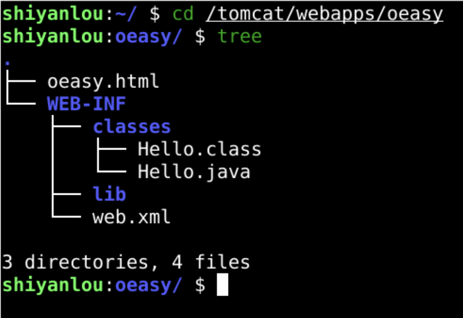
运行tmux
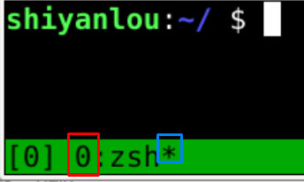
- 红色框中的是窗口标签编号
- 蓝色框中的是当前活跃标记
构造新窗口
- 先ctrl+b
- 先用左手小指按下ctrl不松手
- 然后按下b
- 然后同时松手
- ctrl+b是prefix前置组合键
- 再c
- 再按一下c
- c 的意思是建立 create
- 就可以看到绿色横条出现新的窗口
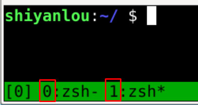
- 红色框的位置告诉我们有两个窗口
- 这个窗口选项卡可以切换么？
切换窗口
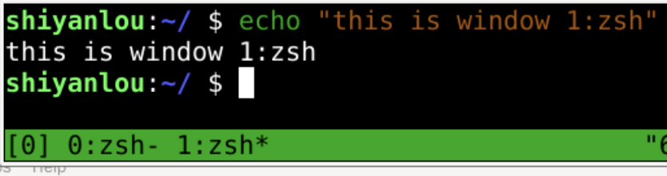
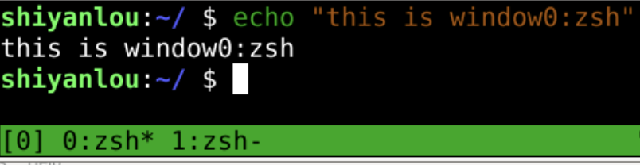
反复切换
- 反复切换
- 最下面一行就是显示切换信息的任务栏
- 星号的位置标识着当前活动的(active)的窗口
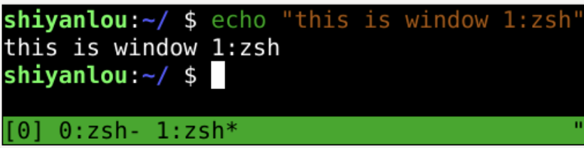
0号窗口
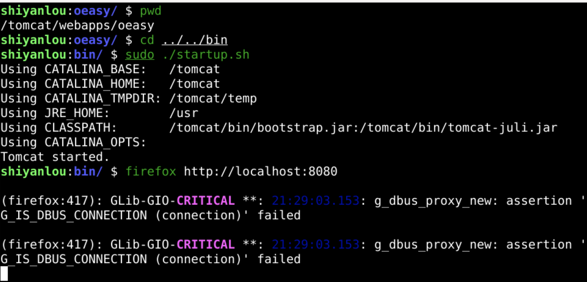
- 这个窗口主要负责执行命令
- 开启或关闭tomcat
- 开启火狐查看页面
- 目前叫做0:zsh
- 想给他换个名字
bin
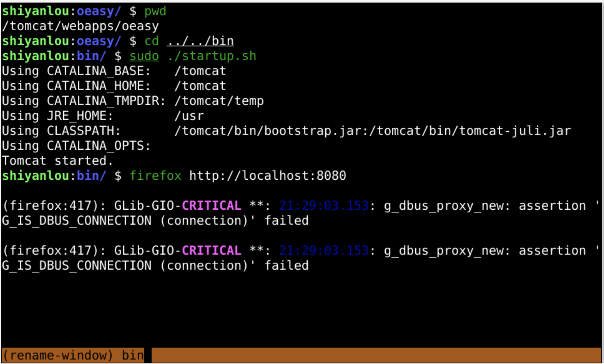
- ctrl-b + ,
- 给0号窗口改名为bin
- 意思是binary(二进制可执行文件)
- 这个窗口是执行binary命令的
1号窗口
- ctrl-b + 1
- 进入webapps/oeasy/WEB-INF/classes
- 注意是oeasy这个文件夹下面的
- 而不是webapps目录下的WEB-INF/classes
- vi Hello.java
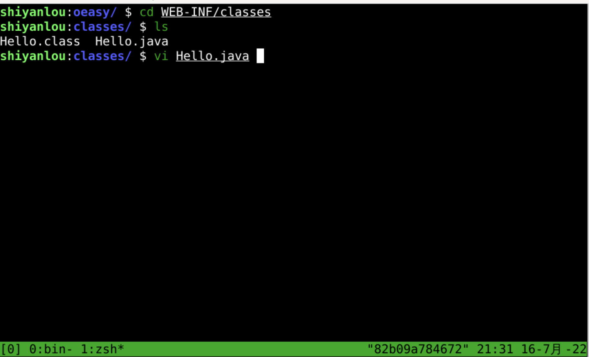
- 这个窗口可以编辑
- 所有的文件修改尽量都在这个窗口选项卡中完成
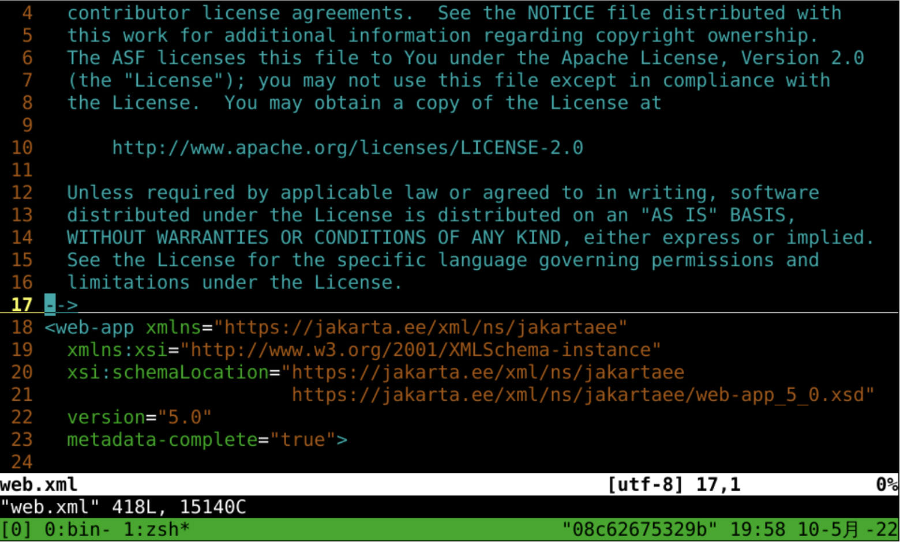
切换vim和zsh
- 在1号窗口中
- 运行的是vim这个程序
- 开启zsh子窗口
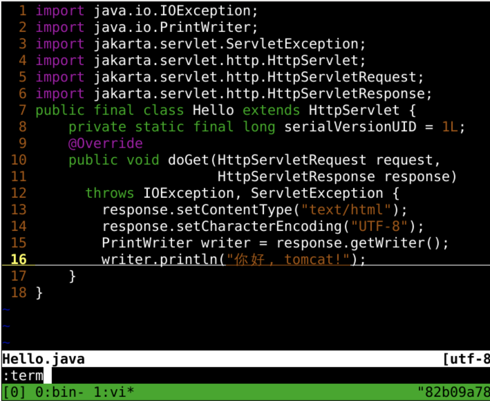
复制代码
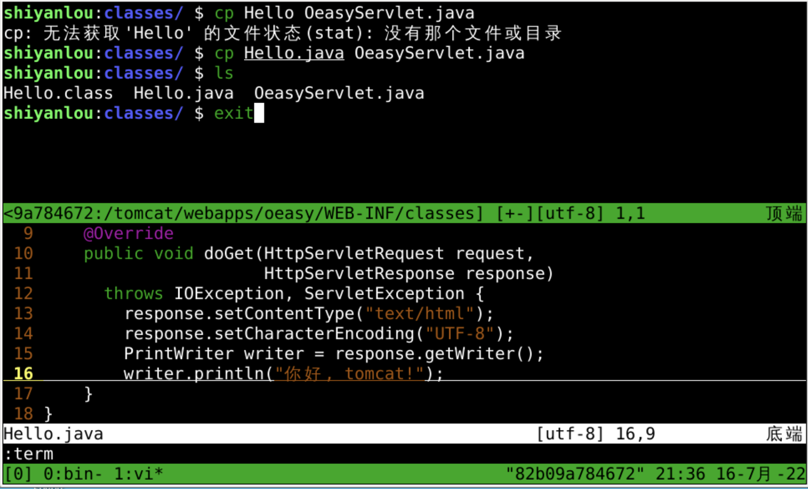
- exit退出当前的zsh终端窗口
- 回到vim全屏的状态
- 并进行编辑
修改java
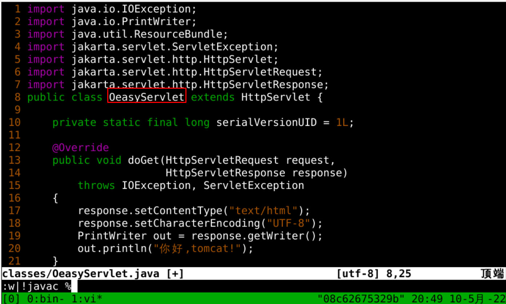
- public class的名字应该和文件名一致
- 保存并尝试编译
编译
- 我们试图将OeasyServlet.java编译成OeasyServlet.class
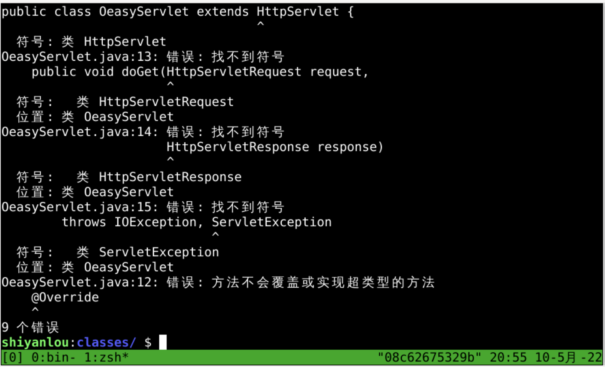
- 找不到 HttpServletResponse 这个类
- 上次我们用-cp解决了这个问题
- 可是这如何理解呢？
基础
- 我们要搭建房子
- 房子的名字叫做OeasyServlet.class
- 这个房子是由现成的积木搭成的
- 我们无须锯木头、做抛光、上颜色、刷清漆
- 只需要把积木拿过来
- 直接按照我们的方式连接放置好就可以了
- 问题是
积木
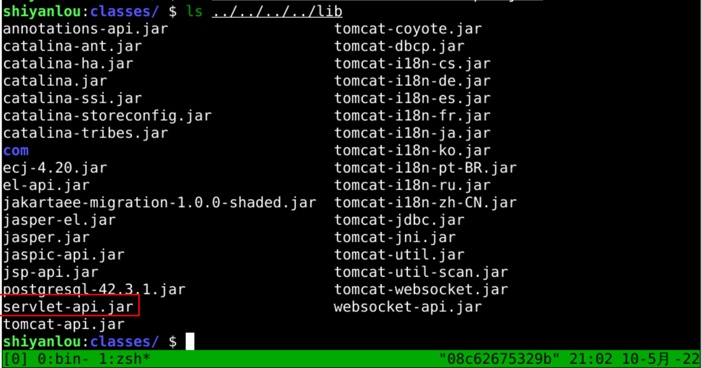
- 红色框里面的东西就是我们要拼接的积木套装
- 这里面有些什么积木呢？
查看
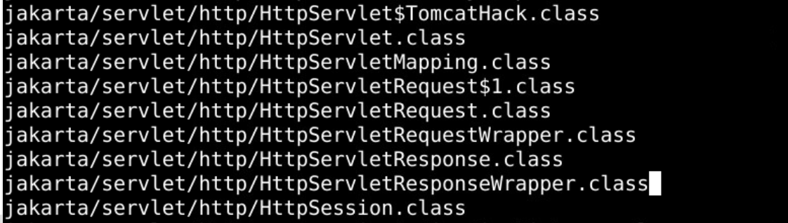
- 可以找到HttpServletResponse.class等
- 这就是我们搭建要用到的各种积木
- 我们的目标是搭建一个OeasyServlet.class
- 搭建所需要的HttpServletResponse.class等class作为原料
- 这些class都放在存储在servlet-api.jar里面
- 那什么是servlet-api呢？
- 怎么理解api呢？
api
- api就是application programming interface
- 应用程序编程接口
- 意思就是
- 你要做应用程序
- 人家tomcat给你基本的框架(framework)
- 你拿tomcat给的这套积木搭建就行
- 不用尝试造轮子
- tomcat这里面有Request也有Response
- 每个积木块你都可以拿去用
- 但是要根据具体的积木接口interface
- 什么是接口？
接口
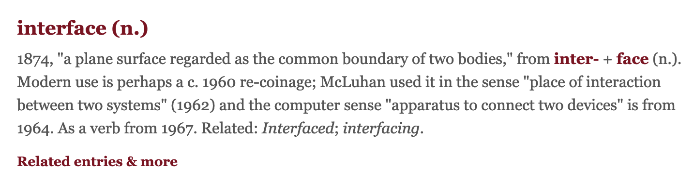
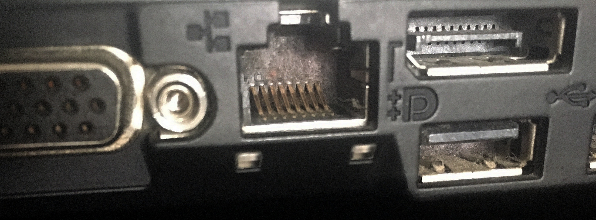
- 比如u盘和笔记本电脑之间的接口
- 类似的还有
- 但是我怎么看不见这个接口呢？
软件接口
- 我们编程时
- 先引入这些类(积木)
- 然后根据api来进行编程
- 按照这些积木的使用要求来使用
- 这就是软件中的接口
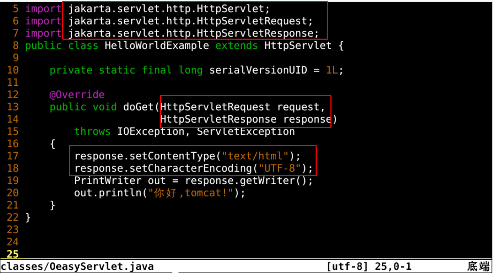
- 这种东西就是为了让我们来开发应用程序来用的
- 从1978年第一次出现
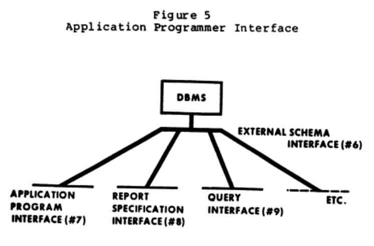
搭建应用
系统
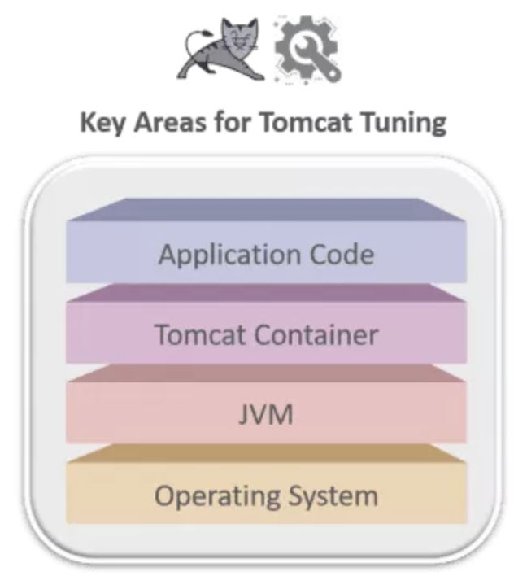
- 系统和应用是分层级的
- 我们的系统是ubuntu20运行在裸金属之上
- jvm运行在ubuntu20之上
- 应用tomcat是在jvm上运行的
- 我们的具体应用oeasy是基于tomcat的
- 下层的基础搭建好了之后
- 具体如何找到这些积木呢？🤔
cp
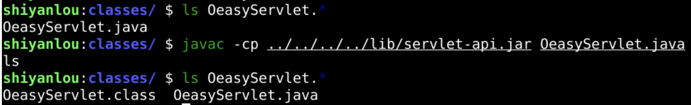
- -cp参数设置了CLASSPATH
- 把servlet-api.jar这个文件作为一个路径放入CLASSPATH
- 包括我们需要的所有积木
- 基础类包
- servlet-api.jar中的
- HttpServletResponse.class等
- 编译通过了
- 得到了OeasyServlet.class
- 工作流程
- 设置好CLASSPATH
- 编译java文件
- 编译成功
- 但是每次都要打一个长长的 -cp很麻烦
- 可以设置CLASSPATH成系统变量么？
CLASSPATH路径设置
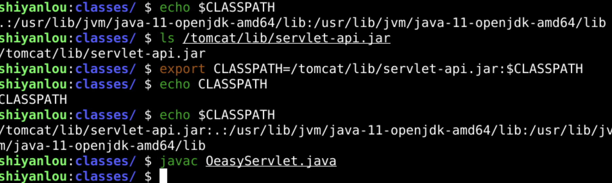
- 找到servlet-api.jar包绝对路径
- 然后附加到CLASSPATH变量中
- 这个过程其实就是配置类库
- 可以每次进入zsh都自动设置好CLASSPATH么？
配置文件
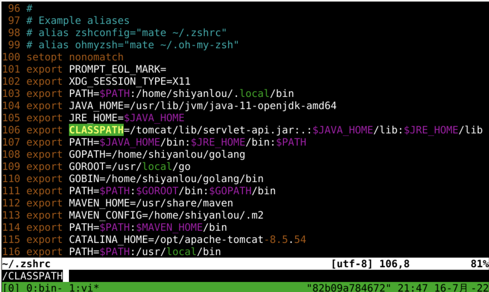
- 编辑并保存CLASSPATH变量
- 添加servlet-api.jar这个包
- 然后执行~/.zshrc使新配置生效
- 重新编译
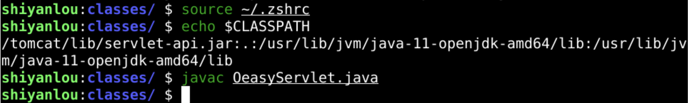
- 编译成功
- 这样每次进入zsh的时候
- 就会自动设置好CLASSPATH
- 想用什么jakarka库里面的HttpServletResponse
- 直接拿过来用就可以了
- 如何把这个OeasyServlet.class映射到url里面呢？
映射
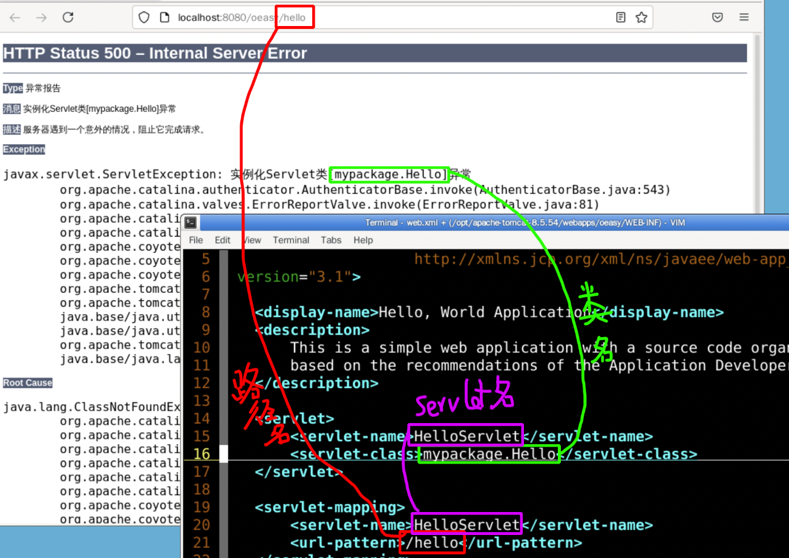
路由
- 所有的交互都是用户使用url进行的
- url是
universal resources locator
- 注意所有的交互都基于url！！！
交互
- 打开lanqiao.cn
- 浏览器和服务器之间不只进行一次交互
- 下载的所有图片、样式、脚本、声音
- 都是需要发送请求和接收响应来完成
- 访问了一次首页
- 进行了216次请求
-
传输了22.72M的数据
-
我们已经
- 具体怎么写呢？
web.xml
- 找到classes向上一层的web.xml
- 这个web.xml是oeasy这个应用的
- 把原来的内容复制出一份来
- :13,20t20
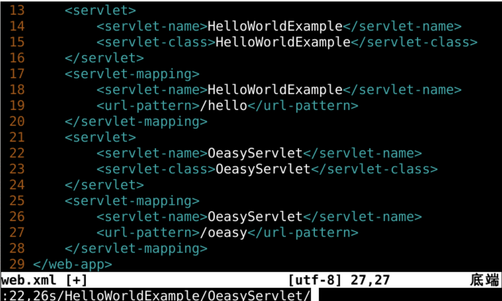
批量替换
- :22,26s/HelloWorldExample/OeasyServlet/
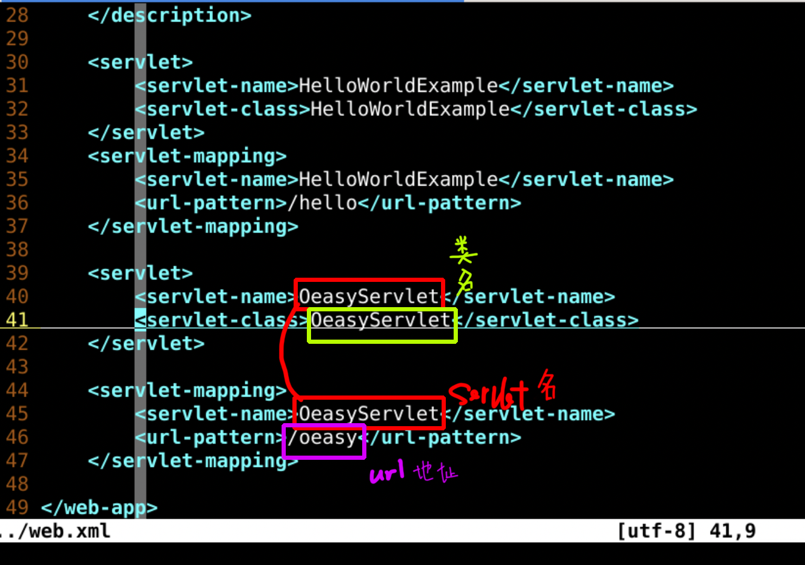
启动
- 谁负责根据请求的url
- 重启tomcat观察
- 层层排错
- 是不是没有找到这个url-pattern
- 找到了url-pattern但
- 是不是指定了servlet
- 指定了servlet
- 是不是没有这个class
- 有这个class
- 是不是能正确运行
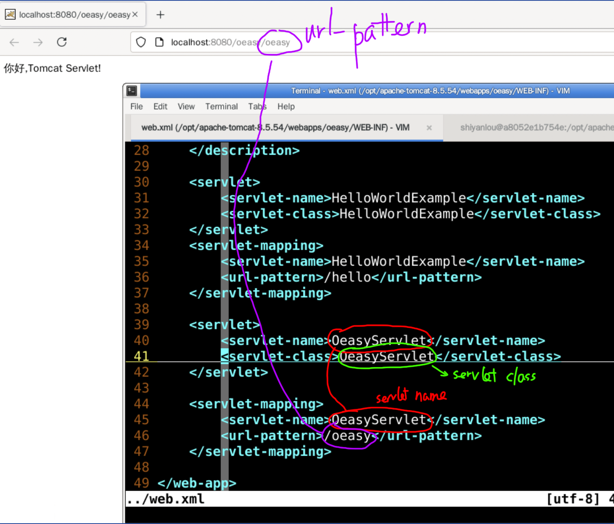
- 这个web.xml是负责从url路由到具体执行文件接线员(route)
导航
- 你要找的是哪里
- 有导航员负责接电话
- 后来有了程控电话交换机
-
网络时代
-
顺利完成后，我们总结一下
总结 🤨
- 我们这次搭建了开发环境
- 使用tmux建立了2个子标签页
- 这里面的路由核心是web.xml
- web.xml是从url路由到class的核心
- web.xml是后端程序的核心
- 出了错就层层排错
- 可是有这样一个问题
- 就是出了预想不到的错误
- 去哪里查看报错信息呢？🤔
- 下次再说！👋